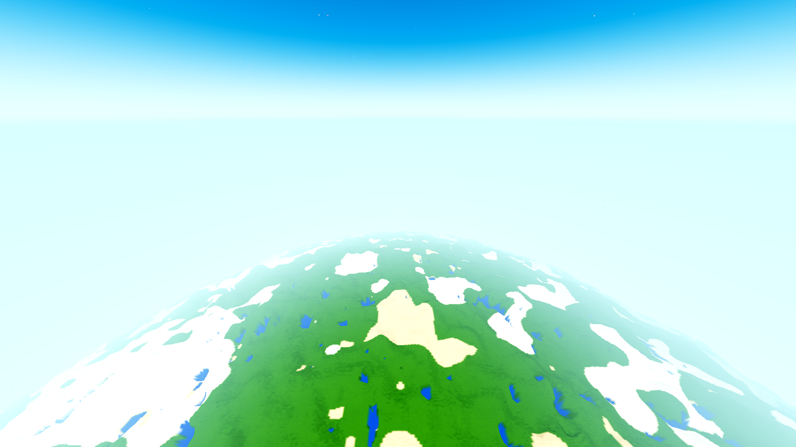
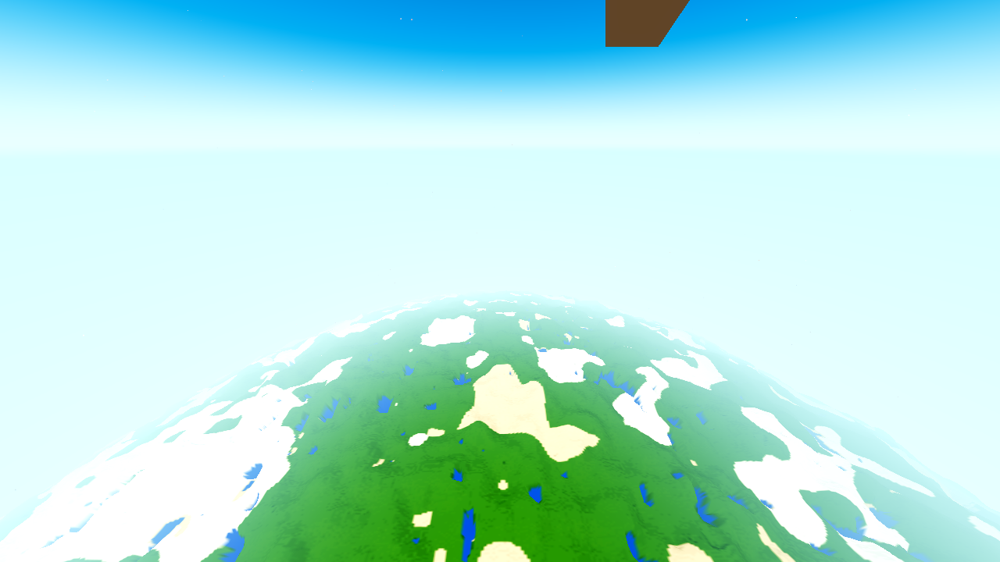

instrument, not fixvantage: 941 m radial, user's settings seed 44 · T=0.5 · R24 · FOG_PCT 83 · fog_far 332.0 m · render edge 400.0 m Forward+ lavapipe · 1280×720 · drain 60
What this is. A per-frame pixel-fraction instrument at a fixed airborne
vantage, built exactly as the ticket spec demands: the fractions are measured by
eliminating one world component at a time against the world-hidden reference
frame — never by colour (colour cannot separate fog-washed terrain from sky: both sit
at the single-source air colour (208,241,251), by design, AC-0401/AC-0429). The
negative test (a counter that can be made to fail) and the four-state elimination
(reported as evidence, no pre-decided winner) are the heart of the deliverable.
Plus the camera preset the AC-0394 notes audit found owed: air is now a
standing member of the AWECRAFT_CAM set.
| File | Role |
|---|---|
godot/scenes/harness.gd (modified, air branch only) |
The air preset — self-contained like planet: flies a frozen
player to a stated radial altitude (default 941 m, the user's documented
flight altitude, AC-0449), aims 30° below the local horizon (env-settable), 99° FOV
default (the flight FOV: base 90 × 1.10, player.gd:849–852); waits the body LOADED
+ AWECRAFT_SNAP_DRAIN frames with AWECRAFT_SNAP_STEPS settle pairs;
RESULT carries the measured shot pose + the live derived
thresholds (fog_far off env.fog_depth_end, render_edge off
satellite.last_render_edge) + the sky's live pushed uniforms. Env hooks:
AWECRAFT_AIR_ALT/PITCH/FOV/NADIR/PLAYERCAM. The preset-cam path hides the
frozen player's model (see §8 — the trapezoid). |
tasks/AC-0450/aircensus.py (new) |
The census: pure Python + PIL (no numpy on this box — the AC-0449 precedent). Takes F0–F4 + the RESULT JSON; computes the masks, the fractions, the ray→R-sphere distance axis, the contrast-with-distance profile and the negative-test report. Consistency guards included (the instrument must be able to be incoherent). |
godot/HARNESS.md (modified) |
air added to the AWECRAFT_CAM preset list + a dedicated
AWECRAFT_AIR_* row (the AC-0399/AC-0422 hand-written pattern). |
tasks/AC-0450/census-{941-30, 941-nadir, 300-nadir, playercam}.{json,out} (new) |
The four census outputs (machine-readable + printed). |
tasks/AC-0450/captures/*.png (new, 17 frames) |
The full matrix (below). tasks/AC-0450/plan.html,
tasks/AC-0450/continuity.md — plan and journal. |
| Value | Home (single source) | Read at |
|---|---|---|
| fog_far = 332.0 m | DayNight.fog_far(render_radius, fog_start_pct) —
godot/core/daynight.gd:49–50; pushed to env.fog_depth_end at
main.gd:1538 | live off env.fog_depth_end, printed in RESULT (332.0 at
R24/FOG_PCT 83 — the user's settings) |
| render_edge = 400.0 m | (render_radius + 1) * 16.0 — main.gd:1523
(lod_avg push) / satellite_body.gd:931 | live off
world.satellite.last_render_edge, printed in RESULT |
| vantage constants 941 / 30 / 99 | stated choices, not derived values — 941 m = the user's documented flight altitude (AC-0449); 30° = down-and-outward; 99° = the flight FOV. All env-overridable. | |
| per-pixel camera distance | ray→R-sphere near intersection, built from the
arm's measured shot pose (RESULT pos/aim/up/fov) and R = Game.planet_R = 4000
(printed). The near root is −bd − √disc (the far root is the opposite side of the
planet — the sign error was caught by the synthetic test, not by the user). | |
No arm hardcodes 24 / 332 / 400: the R4 probe printed fog_far 69.6 / edge 80; the R24 runs
printed 332.0 / 400.0 — same code, different settings (the probe is
captures/probe-r4-air.png).
Five frames at one pose (plus the elimination references at the context vantages); per-pixel, max-channel delta, tolerance 2/255:
| Frame | Hook | Masks it yields |
|---|---|---|
| F0 as shipped | — | baseline |
| F1 sky's air term off | AWECRAFT_SKYALT=0 |
skybody = |F0−F1|>tol. Refines the background class: a pixel that reads
as background and changes with the sky body is true sky; one that reads as
background but does not change is fully-hazed geometry (the body's rim haze
mixes toward the single-source u_air, which is the sky's air fill —
indistinguishable by design, reported as its own class). |
| F2 engine fog off | AWECRAFT_NO_FOG=1 |
fog-owned = |F0−F2|>tol (the body is fog_disabled, the sky is
untouched by the fog — the delta isolates the fog's near/far-tier tinting). |
| F3 satellite body off | AWECRAFT_SAT_BODY=0 |
(d) body = |F0−F3|>tol (the body's visible contribution). |
| F4 world hidden | AWECRAFT_NO_WORLD_VIS=1 |
(a) background = |F0−F4|≤tol (reads as background: nothing distinguishable drawn in front). This frame is also the “coverage disabled” frame — the negative test (no coverage pass exists yet to disable; hiding all world geometry is the maximum removal). The near/far tier classes are geometry-not-body; at 941 m they are measured, not assumed (their minimum distance vs the 332 m discard wall is in the output). |
(a) also splits analytically: (a)_sky = background pixels whose ray misses the
planet; (a)_hole = background pixels whose ray hits the planet — background where
terrain is expected, the class the standing r16 far_holes census reports as 0/0
while the user photographs it. Documented model caveat: the ray model uses the bare
R=4000 sphere; the actual surface is R+H, so the disc silhouette extends above the
bare tangent by the terrain height at the tangent — measured at 941/30°: 44,736 px
(4.85%) of visible geometry sit in that band (they count as geometry, correct; they
only shift the sky/hole split).

F0 — as shipped. Sky, the haze band, and the body disc (saturated near rim at the frame bottom, the body's own distance haze up toward the silhouette). No trapezoid (the player-model fix, §8).
F4 — all world geometry hidden: the pure background reference, and the “coverage disabled” frame. Byte-identical to F3 (§4.1): at 941 m the body is 100% of the drawn world geometry.
| Class | Fraction | Reading |
|---|---|---|
| (a) background — reads as the world-hidden reference | 66.95% | 64.57% true sky (sky-body-owned) + 2.38% hazed body (indistinguishable by design) |
| (a)_hole — reads as background where the ray hits the planet | 0.006% (55 px) | all 55 are hazed; 0 are sky-true — the user's photographed hole class does not manifest at 941 m on this tree |
| (d) body — visible satellite-body contribution | 33.05% | the saturated near rim + the textured disc down to its haze limit |
| (b)/(c) tiers — geometry not body | 0 px | measured minimum geometry distance 961.1 m > 332 m fog wall — every in-frame pixel is past the wall, so the tiers own nothing in frame (consistent with the AC-0401 discard; reported with the distance evidence, not assumed) |
| fog-owned | 0.0% | F2 (fog off) is byte-identical to the settled F0
(md5 a9d2876a…) — the engine fog carries zero pixels at this vantage
(the AC-0449 finding reproduced on an independent camera) |
| skybody (changes with the sky swap) | 64.57% | all on rays that miss the planet — the body is opaque (op=1) wherever it is visible; the haze is a colour mix, not an opacity blend |
Per-frame (the settle pair, AWECRAFT_SNAP_STEPS=30,60): background
0.669516 (s30) → 0.669510 (s60) → 0.669508 (final) — the counter is per-frame and
the streaming tail is quantified: the s30 frame differs from the settled frame
(md5 3303c236… vs a9d2876a…) by a few streaming pixels, 5th-decimal in
the fraction. The instrument sees settle state, it does not average over it.
| Frame | (a) background | (a)_hole (ray hits planet) | rise in (a) vs F0 |
|---|---|---|---|
| F0 as shipped | 66.95% | 0.006% | — |
| F3 body off | 100.00% | 28.20% | +33.05% |
| F4 world hidden | 100.00% | 28.20% | +33.05% |
The rise equals exactly the removed visible geometry (33.05%), and the hole class rises to the whole planet-intersecting disc (28.20% = the measured ray-hit fraction of the frame). The counter can be made to fail; it is not a number that always reads zero. (The 941 m nadir vantage rises +67.78%; the 300 m nadir rises +36.83% with the world hidden and +25.16% with the body alone — leaving the 11.5% tier class standing.)
f2-nofog.png == f0-air941_s60.png md5 a9d2876a8a7b283b7881204dc96ff975 (fog owns 0 px) f3-bodyoff.png == f4-noworld.png md5 bc024f8d17b53253825337ff30ba9c87 (body = 100% of world geometry at 941 m) f6c-nadir941-bodyoff.png == f6b-nadir941-noworld.png md5 f9030e165c2bba6ecb62644c2a3072ae (same at nadir)
Per-pixel camera-distance bins (12 equal bins); C = mean |ΔL| between adjacent in-class pixels (L = luma). profile_f0 = as-shipped, over the visible-geometry pixels; profile_f3 = body-off, over the disc = the sky reference the contrast is measured against.
| Bin (m) | 961 | 1122 | 1282 | 1443 | 1604 | 1764 | 1925 | 2086 | 2246 | 2407 | 2567 | 2728 |
|---|---|---|---|---|---|---|---|---|---|---|---|---|
| F0 as shipped (30°) | 1.96 | 2.05 | 3.00 | 1.99 | 1.55 | 1.52 | 0.97 | 1.40 | 1.25 | 1.12 | 1.16 | 0.68 |
| F3 sky reference (30°) | 0.00 | 0.00 | 0.00 | 0.00 | 0.00 | 0.00 | 0.01 | 0.00 | 0.00 | 0.01 | 0.06 | 0.00 |
| F0 as shipped (941 nadir) | 3.49 | 2.81 | 2.76 | 2.13 | 1.56 | 1.34 | 1.20 | 1.07 | 1.15 | 1.17 | 1.05 | 0.94 |
| F3 sky reference (941 nadir) | 0.00 | 0.00 | 0.00 | 0.00 | 0.00 | 0.00 | 0.01 | 0.00 | 0.00 | 0.01 | 0.03 | 0.00 |
The read: the sky reference is flat air (C ≈ 0 — no contrast exists in the background to borrow). The as-shipped profile therefore is the body's own far-LOD contrast: a ~3× collapse from the 961 m rim (1.96, nadir 3.49) to the 2728–2889 m edge (0.68, nadir 0.94). The user's far-field “wash” at 941 m is the body's baked far texture running out of contrast, not fog, not sky, and not (many pixels') DoF. At 300 m nadir the same instrument finds the far tier in frame: C = 10.38 at 300–370 m (the real band + band A, full-res) collapsing to 0.1–0.5 at 440 m+ (bands B/C, the 8×8/4×4 averages — near-flat in frame), with 11.5% of the frame in the tier class and 63.17% reading as background where the ray hits terrain. That is the AC-0451 handover-annulus shape, quantified, reported as context for the contested reading — not conflated with the user's 941 m vantage.
| State | Hook | Frame evidence at 941/30° | What it owns (measured) |
|---|---|---|---|
| as shipped (F0) | — | baseline | — |
| sky's air term off (F1) | AWECRAFT_SKYALT=0 | skybody 64.57% of the frame | the true sky + the near-horizon band; 0 px on the visible body (the body is
opaque wherever visible); RESULT shows u_sky_alt 1.0→0.0 and the ON-only
u_space_sky dropping to null |
| engine fog off (F2) | AWECRAFT_NO_FOG=1 | fog-owned 0.0% | nothing — byte-identical to settled F0. (Note: in this state
env.fog_depth_end reads the stale 100.0 and the lod_avg wall is pushed with
it — no observable effect at this vantage, reported for completeness.) |
| satellite body off (F3) | AWECRAFT_SAT_BODY=0 | (a) rises +33.05% → 100% | 33.05% visible body + the 2.38% hazed body that then reads as sky; F3 == F4 byte-identical ⇒ the body is 100% of the world geometry in frame |
| world hidden (F4) | AWECRAFT_NO_WORLD_VIS=1 | (a) = 100% | the reference itself; also the negative-test frame |
Honest reading, without a winner: at the user's vantage the frame is 67% background-reading / 33% visible body; the engine fog demonstrably owns zero pixels; the sky body owns 64.6% of the frame (it is the sky, not a leak); the tiers own nothing in frame because every in-frame pixel is past the 332 m wall; the remaining “pale” look the user reports is the body's own far-LOD contrast collapse (§5) plus the 2.38% by-design hazed band. Whether the user's complaint is that (the far LOD's lack of contrast — a texture/LOD problem) or the handover reading (the annulus — a tier-ownership problem, live at 300 m in §5) is a question this instrument now measures but does not answer: both frames and both counts are above, and the next ticket picks the fix to match the reading the user confirms.
No. The preset camera is a bare Camera3D (main._make_camera(),
fov/far set, nothing else) — no CameraAttributesPractical, no DoF, same
documented limitation as the planet preset (AC-0449 proved it byte-identically).
The ownership fractions are DoF-invariant, so the census is valid on the bare
camera. The AWECRAFT_AIR_PLAYERCAM=1 frame (captures/f5-playercam.png,
90° base FOV — the frozen player gets no flight kick — with the DoF live) is the
cross-check: it shifts 1.74% of the frame from visible-geometry to
background-reading and moves the contrast profile by ≤ ~0.15 C units across all
bins — the AC-0449 DoF fix (far wall 1500 m, 1400 m ramp) held; DoF is not the
far-field collapse. (The playercam frames keep the game's own first-person model
visibility; the model clips equally in F5/F5b/F5c and cancels in every A/B.)

First render set (R4 probe): a flat brown (96,68,38) trapezoid pinned
to the frame top — present in every frame, including the world-hidden
reference (it survived AWECRAFT_NO_WORLD_VIS). It is not world geometry and
not the sky: it is the frozen player's head block, near-clipped — the
preset camera sits at the vantage the player occupies. Left unfixed it would
have sat inside the sky class of every census frame.
After the fix (player.visible = false in the preset-cam path
only — the body's altitude uniform rides the player's position, not its
visibility, so the hide is observation-free): the trapezoid is gone (0 brown
pixels in the region, verified by scan) and the whole matrix was re-rendered
clean. The lesson is in the HARNESS.md air row: a census camera and a census
subject must not share a body.
| Gate | Run | Result | Exit status |
|---|---|---|---|
| G0 — headless load + census | godot --headless --path godot --quit ×3 (g0-1…g0-3) |
0 SCRIPT ERROR + 0 SHADER ERROR (g0-1 caught a real defect in the new branch —
cosf/sinf do not exist in GDScript 4, 4 parse-error lines, fixed, re-run
clean); census + process exit status checked together (the UAF class leaves
a clean log with a signal-11 exit — both halves of the gate) |
RC=0, census ok (final) |
| SMOKE | AWECRAFT_BATTERY=player;interact;light;fluids;genhash headless |
ok: true, all five arms green | RC=0, census ok |
| PROBE — the air arm | 25 render runs (the R0–R7c matrix + the re-render set), Forward+ lavapipe recipe | every run: RC=0 + the - Forward+ - boot line present + SNAP fired + PNG
exists + gate_census.py clean (the R24 runs also proved the drain-60/1200 s
recipe: the matrix ran at ~1 FPS on this box, well inside budget) |
25/25 RC=0 |
| genhash | AWECRAFT_LOGIC=genhash headless |
25/25 byte-identical to the AC-0445 run and the coordinator's HEAVY-r22
heavy-gate set — world generation untouched. (The .scratch/AC-0367-gates/
genhash_pristine_r1.log reference is stale — pre-AC-0311-piece-2 deliberate
rebase — which is why a naive compare against it reads 0/25.) |
RC=0 |
HEAVY gates (the standing set) are the coordinator's job; nothing here touches
world/, shaders, or autoloads — the harness change is an additive, env-gated
branch in a file that is inert during normal play.
tasks/AC-0450/aircensus.py (the instrument) tasks/AC-0450/plan.html (the plan) tasks/AC-0450/continuity.md (journal, append-only) tasks/AC-0450/AC-0450-results.html (this page) tasks/AC-0450/census-941-30.json / .out tasks/AC-0450/census-941-nadir.json / .out tasks/AC-0450/census-300-nadir.json / .out tasks/AC-0450/census-playercam.json / .out tasks/AC-0450/captures/f0-air941.png (F0 as shipped, 941/30) tasks/AC-0450/captures/f0-air941_s30.png (settle pair, 30 frames) tasks/AC-0450/captures/f0-air941_s60.png (settle pair, 60 frames == F2, md5 a9d2876a…) tasks/AC-0450/captures/f1-skyalt0.png (F1 sky air term off) tasks/AC-0450/captures/f2-nofog.png (F2 engine fog off) tasks/AC-0450/captures/f3-bodyoff.png (F3 body off, md5 bc024f8d… == F4) tasks/AC-0450/captures/f4-noworld.png (F4 world hidden = negative test) tasks/AC-0450/captures/f5-playercam.png (player-camera, DoF live, 90 FOV) tasks/AC-0450/captures/f5b-playercam-noworld.png tasks/AC-0450/captures/f5c-playercam-bodyoff.png tasks/AC-0450/captures/f6-nadir941.png (941 m nadir, the AC-0451 view) tasks/AC-0450/captures/f6b-nadir941-noworld.png (md5 f9030e16… == F6c) tasks/AC-0450/captures/f6c-nadir941-bodyoff.png tasks/AC-0450/captures/f7-nadir300.png (300 m nadir, handover-annulus context) tasks/AC-0450/captures/f7b-nadir300-noworld.png tasks/AC-0450/captures/f7c-nadir300-bodyoff.png tasks/AC-0450/captures/probe-r4-air.png (R4 probe — carries the trapezoid, §8) MODIFIED: godot/scenes/harness.gd (air branch), godot/HARNESS.md (air rows)
world/, shaders, or autoloads; no commit (closeout is the
coordinator's); the HEAVY gates run on the coordinator's lane.Engine /home/angrygiant/tools/godot/godot 4.7.1 · Forward+ lavapipe proxy (geometry/layout evidence, not the shipped look — HARNESS.md §2) · all runs seed 44, T=0.5, CLOUDS=0, 1280×720, drain 60 · logs in .scratch/AC-0450/.